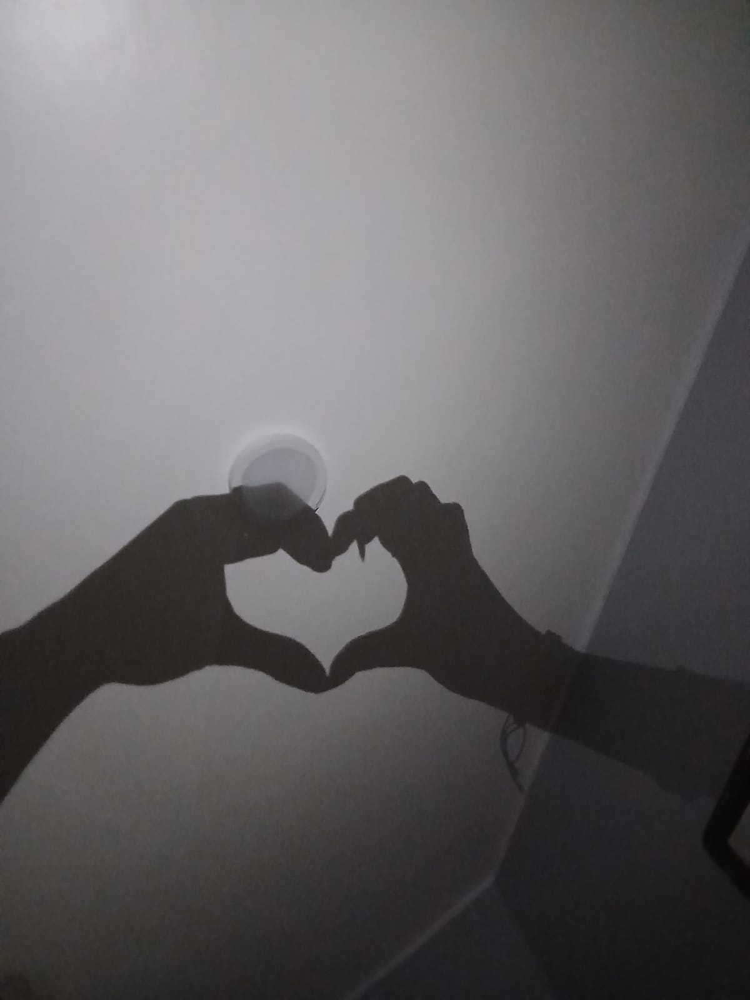

Nuestros momentos favoritos ♡
Con todo mi amor, para mi papita. ❤️

Hoy celebramos siete meses de una historia que comenzó bailando. Preparé siete cartas para ti, una por cada mes que hemos compartido. Porque contigo, hasta los momentos más pequeños se vuelven inolvidables.